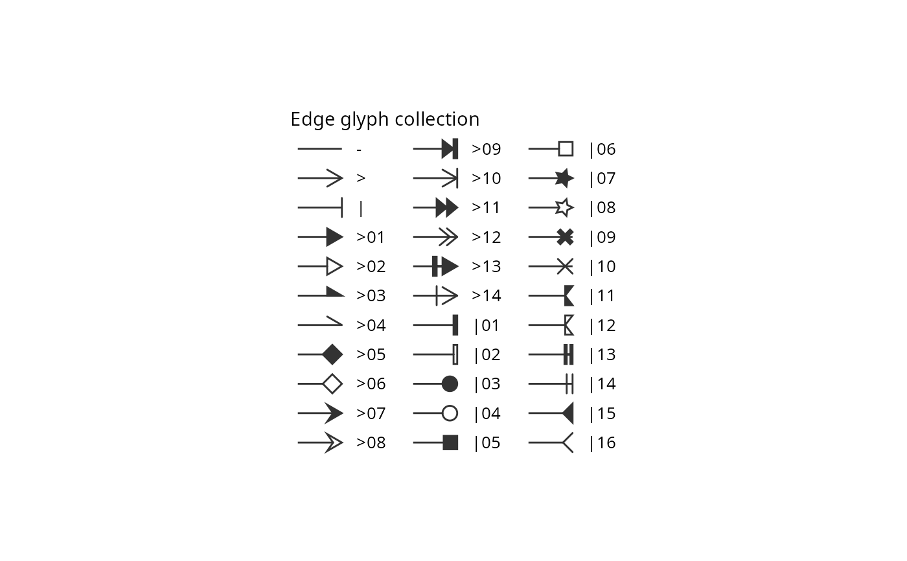
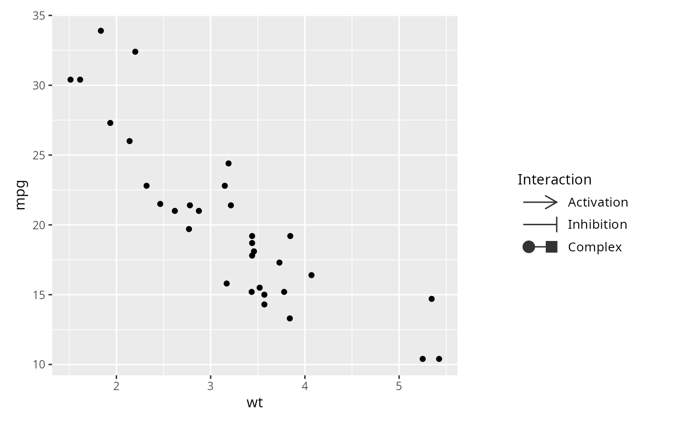

Builds a standalone legend explaining the glyphs drawn at edge ends. Glyphs are not mapped to 'ggplot2' aesthetics, so they never appear in a 'ggplot2' legend; this function draws each key with the same renderer used for edges and returns it as a 'grob' object that can be added to a plot.
Usage
glyph_legend(
arrowType,
legend_title = NULL,
glyph_size = 3,
key_width = 12,
text_size = 10,
colour = "grey20",
linewidth = 0.5,
orientation = c("vertical", "horizontal"),
ncol = NULL
)Arguments
- arrowType
A named vector of arrowType codes, written as for edges; names become legend labels. Codes may be integer codes (e.g.
1,-1), basic token codes (e.g."-->","<->"), or extended token codes (e.g."01<->01"); a bare token is read as the end glyph (e.g.">01"). Seeglyph_listfor the available tokens.- legend_title
The legend title, or
NULLfor no title.- glyph_size
Glyph size, in mm.
- key_width
Width of each key (the edge sample), in mm. It should be large enough to hold the glyphs at both ends, e.g. at least
4 * glyph_size.- text_size
Text size, in points.
- colour
Edge and glyph colour: one value, or one per key.
- linewidth
Edge and glyph line width, in mm: one value, or one per key.
- orientation
Legend arrangement (
"vertical"or"horizontal"): the order in which keys fill the columns. Vertical fills each column top to bottom; horizontal fills each row left to right.- ncol
Number of columns of keys. Defaults to 1 for a vertical legend and to one column per key (a single row) for a horizontal one.
Value
A 'gtable' object of class 'gspace_legend', which can be drawn with
plot() or grid::grid.draw(), or added to a ggplot with
'patchwork'.
Examples
library(ggplot2)
# Show the whole glyph collection, arranged in three columns
glyphs <- glyph_list()
leg1 <- glyph_legend(glyphs$token, ncol = 3,
legend_title = "Edge glyph collection")
plot(leg1)

# Build a legend from named arrowType codes; names become labels
tokens <- c(Activation = "-->", Inhibition = "--|", Complex = "03|-|05")
leg2 <- glyph_legend(tokens, legend_title = "Interaction")
plot(leg2)
# Add a glyph legend to a plot (requires patchwork)
if (requireNamespace("patchwork", quietly = TRUE)) {
p <- ggplot(mtcars, aes(wt, mpg)) + geom_point()
p + leg2 + patchwork::plot_layout(widths = c(1, 0.5))
}
